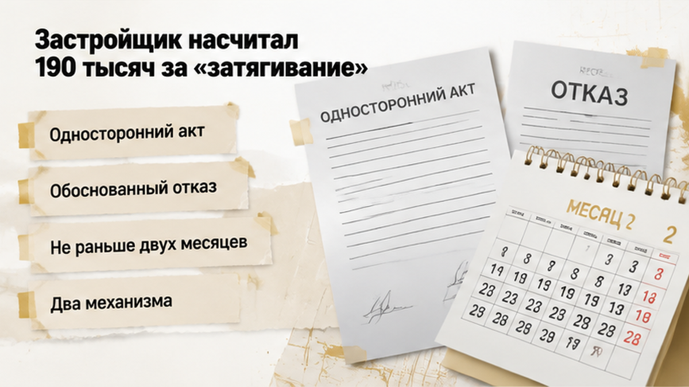
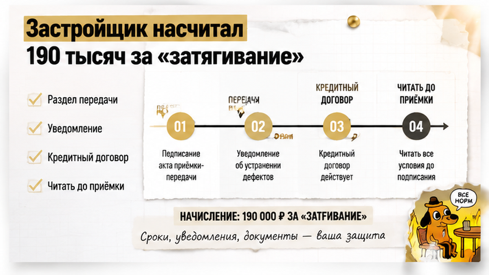
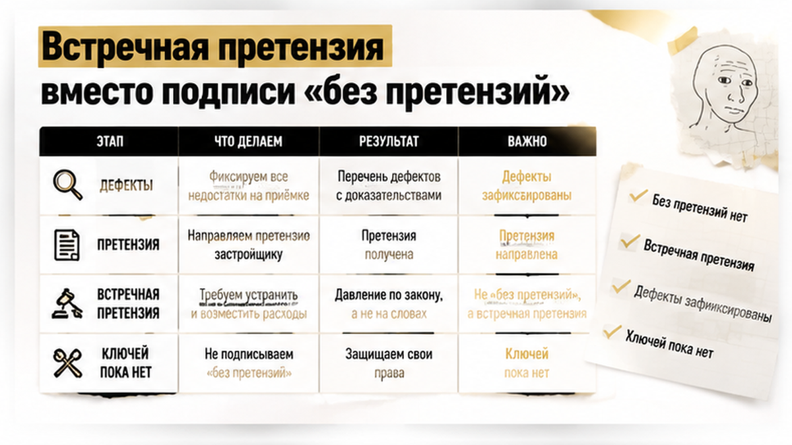
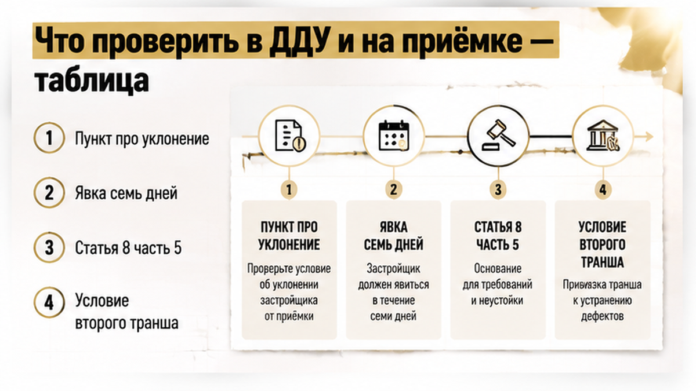

Семья в Тюмени пришла на приёмку квартиры в новостройке на севере города с чек-листом, фонариком и рулеткой — всё как советуют в интернете, всё правильно. Через четырнадцать дней они получили от застройщика претензию примерно на 190 000 рублей — за то, что не подписали передаточный акт. Ключей у них нет до сих пор, зато есть ипотечный платёж и аренда в одном и том же месяце: банк не выдал вторую часть кредита, потому что в кредитном договоре деньги привязаны к подписанному акту. Квартиру ждали долго — ДДУ, то есть договор долевого участия, семейная ипотека, деньги на эскроу (это специальный счёт в банке, откуда застройщик забирает их только после сдачи дома). Дом сдали, корпус приняли, семья пришла с детьми смотреть свою будущую кухню. И увидела кривые стены, щели в оконных блоках и вентиляцию, которая не держит лист бумаги.
Святослав Шакин, The Риэлтор, Тюмень. Расскажу изнутри, по документам, а не по слухам: Telegram и MAX. Пишите, если у вас на руках уведомление о готовности и вы не понимаете, что делать в день приёмки.
Начиналось буднично. Пришло уведомление о готовности объекта — бумага, после которой у дольщика по умолчанию семь рабочих дней на приёмку, если в договоре не написан другой срок. Семья тянуть не стала: записались почти сразу, распечатали чек-лист, зарядили телефон.
В квартире нашлось ровно то, что находят через раз. Стены с отклонением, которое видно и без правила. Щели в оконных блоках — в сентябре это «сквознячок», в январе это счёт за отопление и простуженные дети. И вентиляция: лист бумаги к решётке не прилипает, значит тяги нет.
Дальше семья сделала вещь, которая потом стала их главным аргументом. Составила акт осмотра и сфотографировала каждый дефект. Представитель застройщика подписывать дефектную ведомость отказался — этот отказ они тоже записали в акт, письменно, на месте. А передаточный акт — тот самый документ, после которого квартира считается переданной, — подписывать не стали.
Вот здесь и проходит граница, которую обычный покупатель не видит, а профи видит сразу. Акт осмотра — это список претензий. Передаточный акт — это переход квартиры к вам со всеми последствиями. Статья 8 закона о долевом строительстве говорит прямо: до подписания передаточного акта дольщик вправе потребовать акт о несоответствии и отказаться подписывать передаточный акт, пока недостатки не устранены. То есть отказ при зафиксированном браке — не бунт и не каприз, а отдельный законный сценарий. Другой вопрос — не ужимает ли эту конструкцию ваш конкретный договор, и читать его лучше заранее, а не в день приёмки.
Через четырнадцать календарных дней после уведомления пришла претензия. Сумма — около 190 000 рублей. Основание — пункт договора о «необоснованном уклонении от приёмки». Арифметика в претензии простая: примерно 0,1% в день от цены договора, умноженные на четырнадцать дней.
Это ориентир, иллюстрация механики: 0,1% × 14 дней — около 1,4% от цены ДДУ, и обратным счётом речь о договоре порядка 13,5–14 млн рублей. У вас в договоре может стоять другой процент, другая база, другой отсчёт. Считать нужно по своей бумаге, а не по чужой истории.
Главное про эти 190 тысяч: закон о долевом строительстве такого штрафа не устанавливает. В 214-ФЗ нет нормы «дольщик не подписал акт — платит неустойку». Это договорная санкция: застройщик сам её прописал в своём тексте и теперь применяет. Такие требования оспариваются встречной претензией и в суде — доказывать необоснованность отказа должен застройщик, а суд вправе снизить явно несоразмерную неустойку по статье 333 Гражданского кодекса.


Рядом живёт вторая конструкция, которую в разговоре сваливают с первой в одну кучу. Односторонний передаточный акт — это когда застройщик подписывает документ сам, без вас. Он возможен при уклонении, но с двумя оговорками. Первая: он не применяется при обоснованном отказе из-за недостатков — том самом сценарии части 5 статьи 8. Вторая: составить его можно не ранее чем через два месяца после договорного срока передачи.
С 1 января 2026 года упрощённый порядок — односторонний акт при простой неявке дольщика в течение месяца — отменён, хотя сама логика «доказанное уклонение» никуда не делась. Так что договорный штраф и односторонний акт — два разных механизма с разными сроками. Фраза «сейчас подпишем без вас и ещё денег с вас возьмём» звучит грозно, а по документам собирается плохо.
Пока шла переписка с застройщиком, в историю вошёл третий участник. Тот, кого семья вообще не считала стороной спора. Банк.
Ипотека у них траншевая: кредит выдаётся не одной суммой, а частями. Первую часть банк уже отправил на эскроу — это специальный счёт, где деньги дольщика лежат до сдачи дома. Вторая часть по условию кредитного договора выдаётся до подписания передаточного акта и в пределах срока, отсчитанного от первого транша. Механику удобно показать на публичной схеме крупного банка: вторая часть выдаётся до подписания акта и не позднее 24 месяцев с даты первой. Это иллюстрация, а не описание банка из этой истории — свои цифры смотрите в своём кредитном договоре.
Дальше — простая арифметика, от которой холодно. Акта нет — остаток кредита банк не выдаёт. Платёж по уже выданному траншу идёт своим чередом, каждый месяц, без скидок на спор. И параллельно семья платит аренду, потому что заселяться в квартиру со щелями в окнах и мёртвой вентиляцией с двумя детьми они не собираются. «Ну подождём пару недель» — звучит терпимо, пока не посчитаете, сколько недель превращается в полгода переписки.
Два платежа в месяц. Ноль ключей.
Это ровно та точка, где банк способен подвесить сделку на самом финише. И то, что условие про транш живёт в кредитном договоре, а не в законе о долевом строительстве, легче не делает: закон вам тут не помощник, помогает только внимательно прочитанная бумага.
Молча ждать при этом никто не обязан. Расходы на аренду за период ожидания — это возможный убыток, его предъявляют отдельным требованием, если вина застройщика доказана. Но требование отдельное: оно не заменяет спор о самих дефектах и не отменяет его. Обычная реакция — «мы просто подождём, они же исправят». Реакция человека, который прошёл это не раз, другая: считать деньги и фиксировать каждый месяц ожидания на бумаге. Про то, как семейная ипотека на новостройку ломается на этапах — одобрение, эскроу, транши, ключи, — я уже разбирал отдельно: там другая точка разрыва, но логика «банк держит деньги, пока нет нужной бумаги» та же.

Акт «без претензий» семья не подписала. Вместо этого отправила застройщику встречную претензию: акт осмотра, фотографии дефектов, требования по устранению. Спор сейчас в досудебной стадии. Ключей по-прежнему нет.
Разница между двумя подписями выглядит формальной, а стоит она дорого. Акт с приложенной дефектной ведомостью говорит: квартиру принимаю, вот перечень того, что вы обязаны исправить, — и всё это зафиксировано на дату передачи. Подпись «без претензий» под устное «да мы всё исправим, вы же нам верите» говорит другое: дефектов не было. Потом доказывать, что щели в окнах существовали в день передачи, а не появились от того, что вы «неаккуратно жили», придётся вам. Устное обещание к делу не приложишь.
С 2026 года набор инструментов у дольщика шире. Можно сразу требовать уменьшения цены договора или возмещения своих расходов на устранение — без обязательного ожидания в 60 дней, как было раньше. Если спорят, существенный недостаток или нет, акт осмотра составляется с привлечением специалиста. Есть и ограничение, о котором лучше знать до подписи, а не после: по договорам с 1 января 2025 года совокупные требования по недостаткам отделки ограничены 3% от цены ДДУ, если в договоре не написано иное. И ещё одна дата: мораторий на неустойки застройщиков завершился 31 декабря 2025 года, требования по просрочке снова работают в обычном режиме. Как та же заморозка денег на эскроу выглядит с другой стороны, я разбирал в истории про перенос ключей на год.
Если на приёмке нашли брак, вы подпишете акт ради ключей или будете спорить, даже когда банк удерживает финальный транш?

Расскажу изнутри, как я сам смотрю такие сделки. Не «в целом по рынку», а по конкретным строчкам, в которых история этой семьи могла свернуть в другую сторону. Все они читаются за один вечер — заранее, до уведомления о готовности. В день приёмки, когда перед вами кладут бланк и говорят «ну что, подписываем?», читать уже поздно.
| Что проверить | Где смотреть | Почему это решает исход |
|---|---|---|
| Пункт про «уклонение от приёмки» и договорную неустойку | ДДУ, раздел о передаче объекта | Именно отсюда берутся суммы вроде 190 000 ₽. В законе такого штрафа дольщику нет |
| Срок явки на приёмку | ДДУ и само уведомление о готовности | По умолчанию 7 рабочих дней. Проспали — застройщику есть чем аргументировать просрочку |
| Право на акт о несоответствии | Статья 8, часть 5 закона о долевом строительстве | Отказ подписывать при зафиксированных дефектах — законный сценарий, а не «каприз» |
| Условие выдачи второго транша | Кредитный договор с банком | Транш часто привязан к передаточному акту. Это условие банка, а не 214-ФЗ |
| Лимит требований по отделке | ДДУ, дата заключения договора | По договорам с 1 января 2025 года — 3% от цены, если в договоре не написано иное |
| Порядок одностороннего акта | Статья 8, часть 6 плюс сроки передачи в ДДУ | Не ранее двух месяцев после договорного срока и не при обоснованном отказе |
Ошибки в этой точке повторяются с обидным однообразием:
Сомневаетесь, что именно вам дают подписать — акт осмотра или передаточный акт? Покажите бланк до подписи: Telegram или MAX. Пять минут разбора дешевле полугода переписки.
Что сделать лично вам, пока приёмка ещё впереди. Открыть ДДУ и прочитать пункт про уклонение и договорные санкции — сегодня, а не после претензии. Это те же пять страниц договора, которые обычно листают по диагонали, а потом удивляются.
На самой приёмке — акт осмотра с фотографией каждого дефекта. Отказался представитель подписывать ведомость — фиксируйте отказ письменно, прямо в акте. И не ставьте подпись «без претензий» под устное «да мы всё исправим, вы же нам верите». Устное обещание в спор не приложишь.
И отдельно, до сделки: посмотрите в кредитном договоре, к какому событию привязан финальный транш. Если к передаточному акту — вы заранее знаете, что спор с застройщиком автоматически становится ещё и денежным вопросом с банком.
История этой семьи не закончена. Спор досудебный, сумма из претензии судом не подтверждена, ключей нет. Но позиция у них рабочая: дефекты зафиксированы, отказ записан, встречная претензия отправлена. Они разговаривают с застройщиком документами, а не эмоциями. Это не гарантия победы — это опора, с которой можно спорить. Приёмка не формальность перед вручением ключей. Это последняя точка, где рычаг ещё у вас в руках. Приходите на неё с чек-листом, заряженным телефоном и прочитанным договором — и вопрос «подписывать или нет» перестанет быть вопросом храбрости. Станет вопросом расчёта. Если до приёмки остались недели — это как раз время открыть ДДУ и кредитный договор, а не гуглить «что делать», когда перед вами уже лежит бланк.